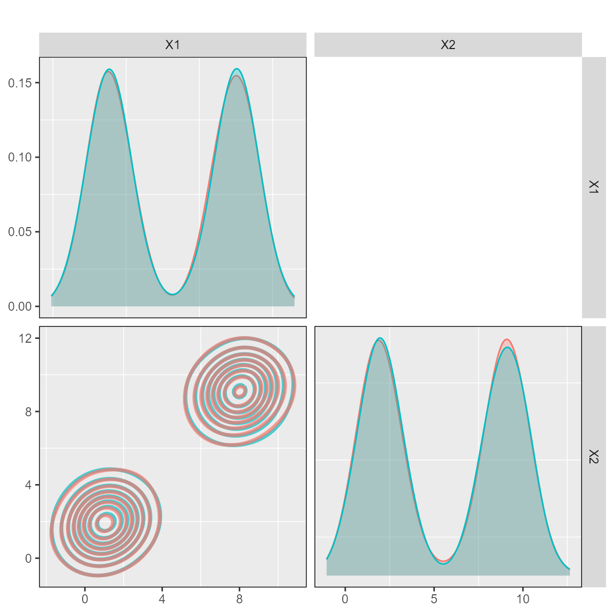
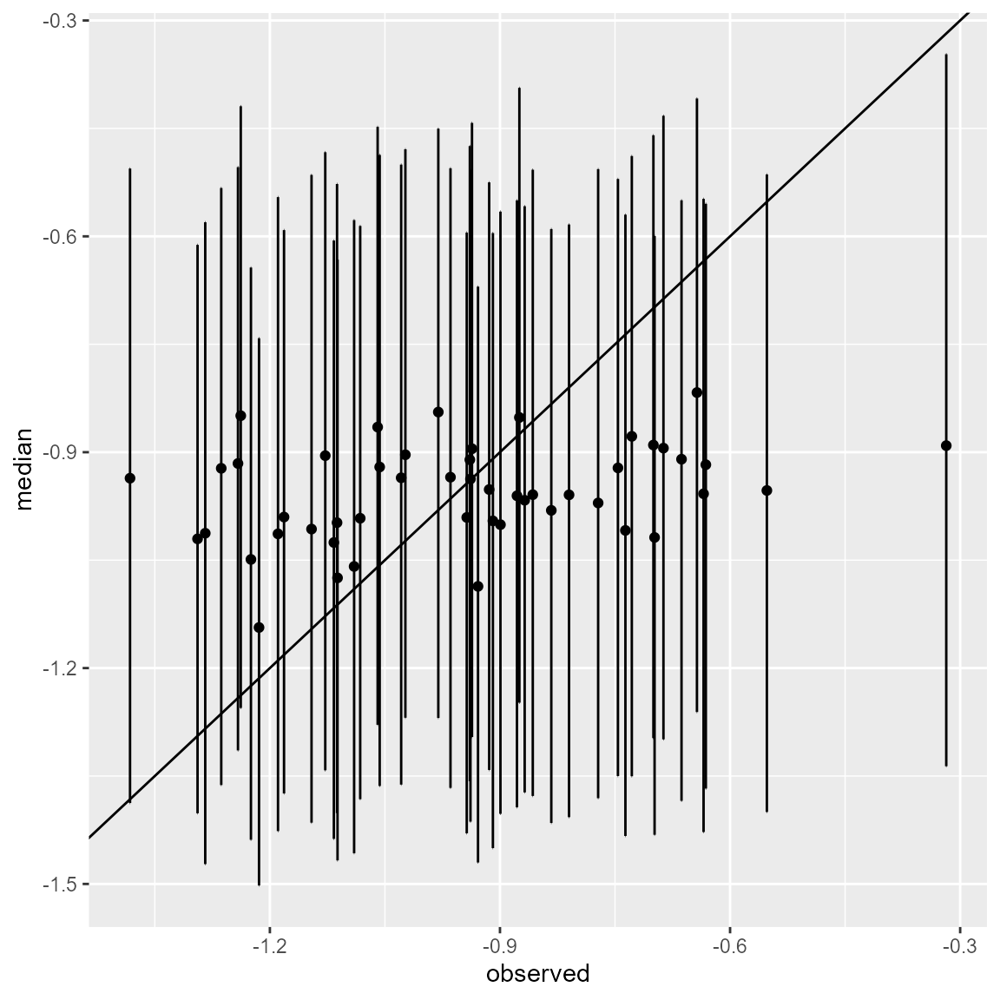
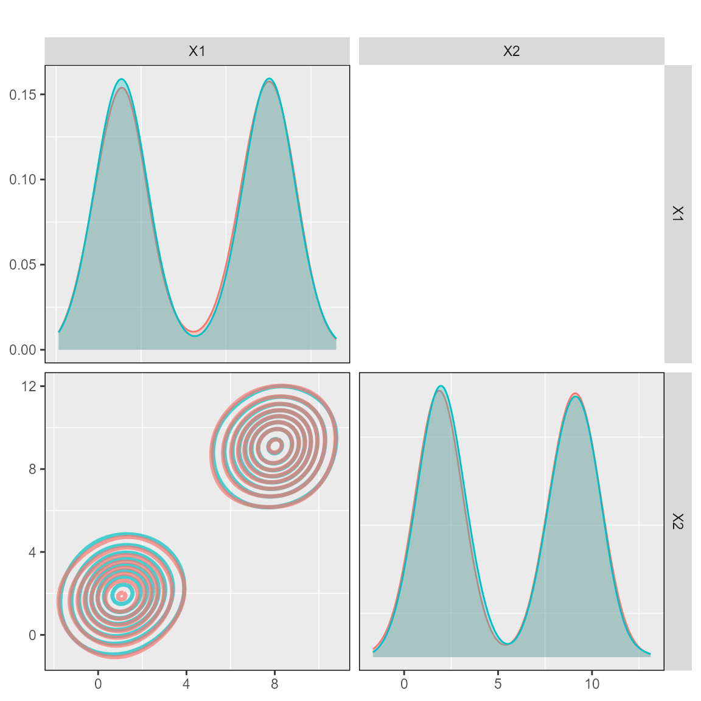
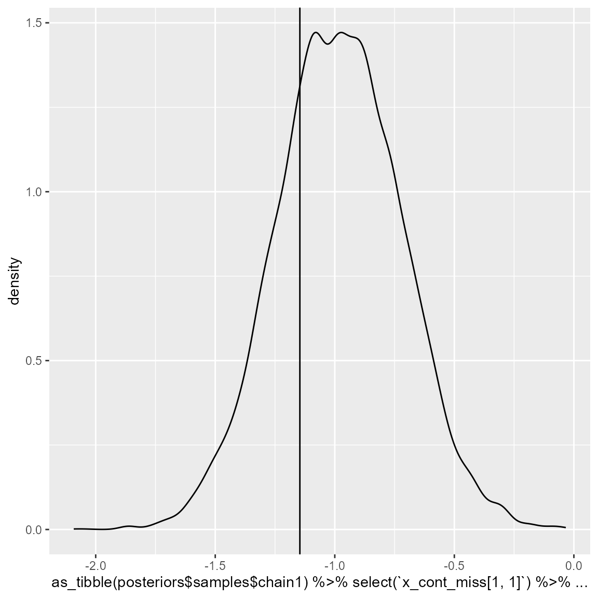

DPMM
DPMM.RmdOverview
The goal of DPMM (Dirichlet process mixture model) is to
fit a Dirichlet Process Mixture Model to a dataset with continuous
and/or categorical predictors. The fitted model can be used for
prediction of missing predictors.
library(DPMM)In here, we will discuss the functions and workflow of this package.
Dataset
We start with discussing the dataset we will be using. Although several datasets are provided with the ‘DPMM’ package, we will be using Dataset 1. Dataset 1 is comprised of two distinct clusters, where the values of both predictor variables do not overlap each other. Therefore, one variable is informative of the other.

Fitting the DPMM to complete data
We can fit the DPMM to the complete dataset. The ‘mcmc_iterations’ represents how long the MCMC chain should run (longer is better), ‘L’ represents the number of clusters that should be fitted, ‘mcmc_chain’ represents the number of MCMC chains being fitted in this function and ‘standardise’ chooses whether the continuous values should be standardised.
posteriors <- runModel(dataset_1,
mcmc_iterations = 20000,
L = 10,
mcmc_chains = 4,
standardise = TRUE)
#> ===== Monitors =====
#> thin = 1: alpha, muL, tauL, v, z
#> ===== Samplers =====
#> RW_wishart sampler (1)
#> - R1[1:2, 1:2]
#> RW sampler (2)
#> - alpha
#> - kappa1
#> conjugate sampler (29)
#> - v[] (9 elements)
#> - muL[] (10 multivariate elements)
#> - tauL[] (10 multivariate elements)
#> categorical sampler (1000)
#> - z[] (1000 elements)
#> |-------------|-------------|-------------|-------------|
#> |-------------------------------------------------------|
#> |-------------|-------------|-------------|-------------|
#> |-------------------------------------------------------|
#> |-------------|-------------|-------------|-------------|
#> |-------------------------------------------------------|
#> |-------------|-------------|-------------|-------------|
#> |-------------------------------------------------------|Check fitting diagnostics
The ‘DPMM’ package provides several diagnostic tools. The function ‘plot_alpha’ takes the posterior samples from the fitted DPMM and explores whether it shows evidence of convergence (important for Bayesian inference). The plot is divided into three panels:
- A: number of components used at each iteration of the fitted model.
- B: average number of individuals in ranked components (after discarding burn-in ‘nburn’, every ‘thinning’ value).
- C: trace plot of alpha values (governs number of components).
plot_alpha(posteriors, nburn = 10000, thinning = 1)We can also check the fit of the DPMM to ensure that random samples from the fitted DPMM are in the same covariate space as the original data.
plot_ggpairs(posteriors,
newdata = dataset_1,
nburn = 10000)
Predictions of missing values
We can introduce missingness in the dataset and check whether the DPMM is predicting values in the right cluster. In this case, we introduce missingness in ‘X1’ for some of the patients in one of the clusters.
rows <- 1:50
dataset_missing <- dataset_1
dataset_missing_predict <- dataset_missing[rows,]
dataset_missing_predict[,"X1"] <- as.numeric(NA)And make predictions from the fitted DPMM.
posteriors.prediction <- predict_dpmm_fit(posteriors,
newdata = dataset_missing_predict,
samples = seq(10000,20000, 100))We can then check whether the values are being predicted in the right place. First, we calculate the credible intervals for each predicted value.
low_q <- NULL
median_q <- NULL
high_q <- NULL
for (i in 1:length(posteriors.prediction)) {
low_q <- c(low_q, quantile(unlist(posteriors.prediction[[i]][]), probs = c(0.05)))
median_q <- c(median_q, quantile(unlist(posteriors.prediction[[i]][]), probs = c(0.5)))
high_q <- c(high_q, quantile(unlist(posteriors.prediction[[i]][]), probs = c(0.95)))
}We then standardise the original values to match the standardisation in the DPMM.
standardised_values <- (dataset_missing[rows,"X1"]-posteriors$mean_values[1])/posteriors$sd_values[1]Lastly, we plot the credible intervals against the true values.
library(tidyverse)
cbind(standardised_values,low_q, median_q,high_q) %>%
as.data.frame() %>%
rlang::set_names(c("observed", "low","median","high")) %>%
ggplot() +
geom_point(aes(x = observed, y = median)) +
geom_errorbar(aes(x = observed, ymin = low, ymax = high)) +
geom_abline(aes(intercept = 0, slope = 1))
Fitting the DPMM to incomplete data
We can also fit the DPMM with missing data present in the original dataset. Let’s introduce some misisngness in both clusters.
dataset_missing <- dataset_1
dataset_missing[1,"X1"] <- NA
dataset_missing[501,"X1"] <- NAThen we fit the DPMM whilst standardising values.
posteriors <- runModel(dataset_missing,
mcmc_iterations = 20000,
L = 10,
mcmc_chains = 4,
standardise = TRUE)
#> ===== Monitors =====
#> thin = 1: alpha, muL, tauL, v, x_cont_miss, z
#> ===== Samplers =====
#> RW_wishart sampler (1)
#> - R1[1:2, 1:2]
#> RW sampler (2)
#> - alpha
#> - kappa1
#> conjugate sampler (29)
#> - v[] (9 elements)
#> - muL[] (10 multivariate elements)
#> - tauL[] (10 multivariate elements)
#> conditional_RW sampler (2)
#> - x_cont_miss[1, 1:2]
#> - x_cont_miss[2, 1:2]
#> categorical sampler (1000)
#> - z[] (998 elements)
#> - zmiss[] (2 elements)
#> |-------------|-------------|-------------|-------------|
#> |-------------------------------------------------------|
#> |-------------|-------------|-------------|-------------|
#> |-------------------------------------------------------|
#> |-------------|-------------|-------------|-------------|
#> |-------------------------------------------------------|
#> |-------------|-------------|-------------|-------------|
#> |-------------------------------------------------------|Check fitting diagnostics
We can do the same diagnostic checks. First the alpha values.
plot_alpha(posteriors, nburn = 10000, thinning = 1)Then comparing the DPMM against the original dataset.
plot_ggpairs(posteriors,
newdata = dataset_1,
nburn = 10000)
Imputation of missing values
We can check how well are those missing values being imputed during the model fitting. Here, we are only checking chain 1, but it can be repeated for all other chains.
intercept_1 = (dataset_1[1,"X1"]-posteriors$mean_values[1])/posteriors$sd_values[1]
ggplot() +
geom_density(aes(x = as_tibble(posteriors$samples$chain1)%>%
select(`x_cont_miss[1, 1]`)%>%
dplyr::slice(10000:20000)%>%
unlist())) +
geom_vline(aes(xintercept = intercept_1))